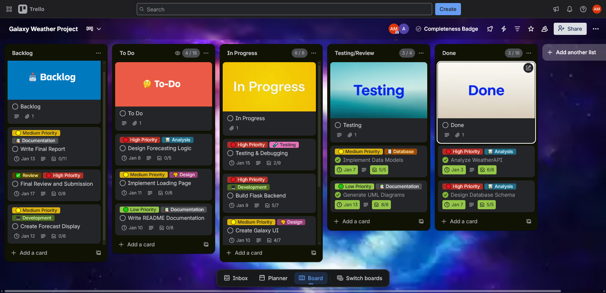
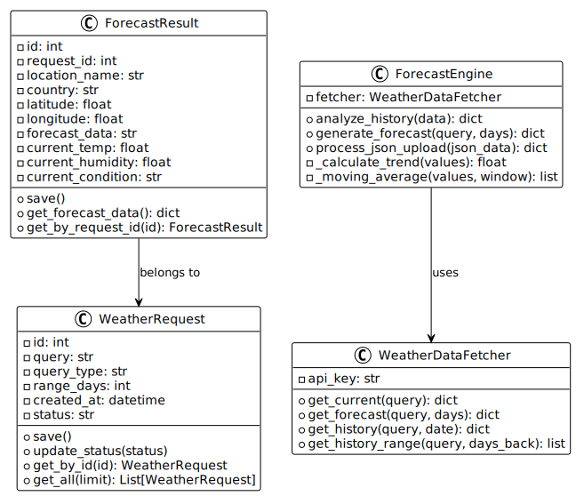
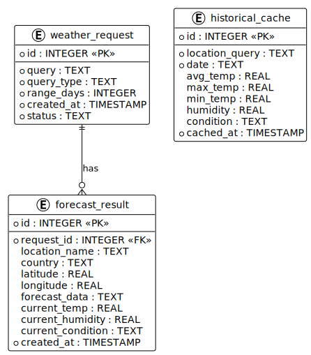

Agenda
01 Introduction & Problem
02 Project Objectives
03 Kanban Methodology
04 System Requirements
05 UML Diagrams
06 System Architecture
07 Implementation
08 Demo & Testing
09 Conclusion
Problem Statement
Existing Apps Lack
- Limited input format support
- No custom data analysis
- Basic display without trends
- No history storage
- Outdated interfaces
Galaxy Weather Provides
- Multi-format location input
- JSON file upload & analysis
- Intelligent trend analysis
- Forecast history storage
- Modern galaxy-themed UI
Project Objectives
1
Build a functional weather forecasting web application
2
Implement intelligent forecasting algorithms with trend analysis
3
Create an engaging, modern user interface
4
Apply software engineering best practices
5
Document with comprehensive UML diagrams
6
Use Kanban methodology for project management
Why We Chose Kanban
| Feature | Kanban ✓ | Scrum | Waterfall |
|---|---|---|---|
| Fixed Iterations | No | Yes (Sprints) | Yes (Phases) |
| Team Size | Any (2+ ideal) | 5-9 members | Any |
| Flexibility | High | Medium | Low |
| Overhead | Minimal | High (ceremonies) | High (docs) |
Perfect for our 2-person team with continuous delivery focus!
Our 5-Column Kanban Board
Backlog
WIP: ∞
All identified tasks
→
To Do
WIP: 4
Ready for work
→
In Progress
WIP: 2
Currently active
→
Testing
WIP: 2
Under review
→
Done
WIP: ∞
Completed
Team Task Distribution
👩💻
Asal Hadian
Backend Developer
- API analysis & integration
- Database design (SQLite)
- Forecasting algorithm
- Flask application
- Error handling
👩🎨
Sadaf Bagherian
Frontend & Documentation
- Galaxy UI/UX design
- HTML/CSS templates
- JavaScript animations
- UML diagrams
- Report writing
Trello Board - Project Progress

Initial Setup

Mid-Project

Final State
Functional Requirements
| ID | Requirement | Priority |
|---|---|---|
| FR-01 | Multi-format location input | Must Have |
| FR-02 | Fetch weather from external API | Must Have |
| FR-03 | JSON file upload for custom data | Should Have |
| FR-04 | Trend-based forecast calculation | Must Have |
| FR-05 | Store forecasts in database | Must Have |
| FR-06 | View forecast history | Should Have |
Technology Stack
Backend
Frontend
External
UML Diagrams Overview
7 comprehensive diagrams documenting our system:
1 Use Case Diagram
2 Class Diagram
3 Sequence Diagram
4 Activity Diagram
5 State Diagram
6 Component Diagram
7 ER Diagram
Use Case Diagram

Actors & Use Cases
- User: Primary actor
- Enter Location
- Upload JSON Data
- Request Forecast
- View Results & History
Class Diagram

'">
02_class_diagram.svg
Main Classes
- WeatherRequest - User requests
- WeatherDataFetcher - API client
- ForecastEngine - Algorithm
- ForecastResult - Results
Sequence Diagram

Request Flow
- User enters location
- Flask creates request
- AJAX processing
- API data fetch
- Trend analysis
- Display results
Activity Diagram

Workflow
Start → Input → Validate → Fetch → Analyze → Generate → Store → Display → End
State & Component Diagrams

Request States: Created → Processing → Completed/Failed

System Components: Frontend, Backend, External
ER Diagram

'">
07_er_diagram.svg
Database Tables
- weather_request - id, query, type, days, status
- forecast_result - id, request_id, location, data
- Relationship: One-to-Many